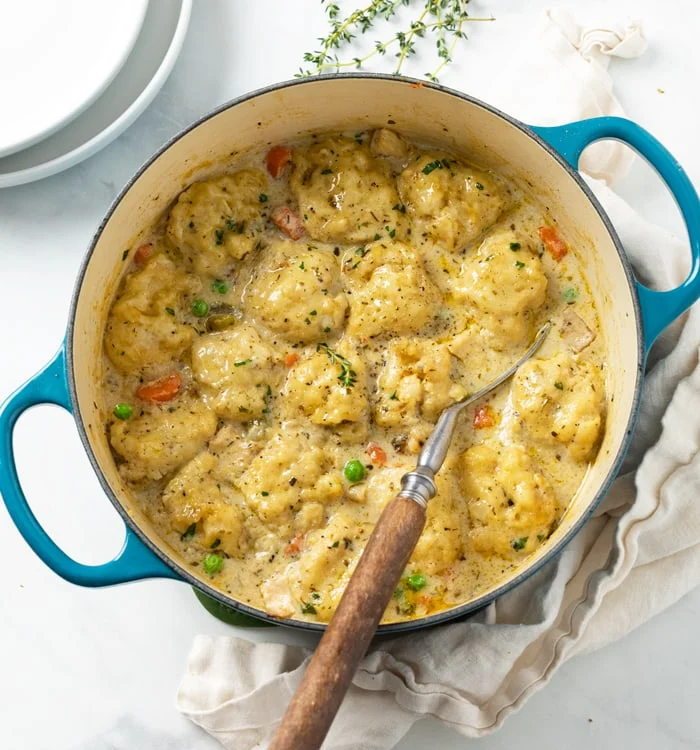

Chicken & Dumplings

Description
This is a chicken and dumpling recipe from The Cozy Cook. Chicken and dumplings is a hearty classic perfect for those rainy Autumn days when what you really want is something warm, herbaceous, and comforting.
Ingredients
Chicken Soup
- 1 tbsp olive oil
- 2 lbs bone-in skinless chicken breast or thighs
- salt/pepper (to taste)
- 5 tbsp butter
- 1 small yellow onion, diced
- 1 cup carrots, diced
- 2 sticks celery, diced
- 3 cloves garlic, minced
- 1 tsp Worcestershire sauce
- 1 tsp hot sauce
- 1/3 cup flour
- 4 1/2 cups chicken broth
- 1 chicken bouillon cube (optional)
- 1 1/2 cups half and half
- 3/4 cup frozen peas
Seasonings
- 1 tsp onion powder
- 1/2 tsp each: dried basil, parsley, thyme, rosemary, mustard powder
- 1/4 tsp ground sage
- 1/8 tsp pepper
Dumplings
- 2 cups cake flour (or all-purpose)
- 2 tsp baking powder
- 1/2 tsp baking soda
- 1 tsp salt
- 1/2 tsp garlic powder
- 2 tsp sugar
- 3/4 cup cold sour cream
- 1/4 cup cold milk
- 4 tbsp butter, melted
Steps
Sear the Chicken
- Searing the chicken is optional; raw or cooked chicken can be added right to the broth in later steps. Searing first adds a lot of flavor to the soup pot which makes the broth more flavorful. It also adds color and texture to some of the chicken.
- Season each side of the chicken with salt and pepper.
- Heat olive oil in a 4 1/2-quart soup pot over medium-high heat.
- Add the chicken and cook for ~3 minutes per side until a little bit of brown color has developed. The middle will still be uncooked. Let the chicken rest for 10 minutes, then dice into bite-sized pieces. (Discard the bones)
Make the Soup
- Combine the seasonings and set aside.
- Melt the butter in the same pot the chicken cooked in over medium heat and use a silicone spatula to scrape the bottom of the pot (deglazing).
- Add the diced onions, carrots, and celery and cook for 5 minutes.
- Add the minced garlic, Worcestershire sauce, hot sauce, and seasonings. Cook for 1 more minute.
- Add the flour and toss to coat. Cook for 2 minutes, stirring continuously.
- Add the chicken broth in small splashes, stirring continuously. Scrape up any remnants from the bottom of the pot as you do so. Add the half and half in the same manner. Add the chicken bouillon (if using).
Make the Dumplings
- Combine the flour, baking powder, baking soda, salt, garlic powder, and sugar in a medium bowl.
- Add the milk, sour cream, and melted butter. Use a folding motion to combine and form a dough, but don't overmix or they will be dense.
- Add the chicken back to the soup along with any juices from the plate. Stir to combine and reduce heat to low. (If using leftover chicken, add it now).
- Use a small cookie scoop and carefully place the dumplings over the soup in an even layer. Spoon a little liquid over each one.
- Cover tightly and increase heat slightly to bring it to a gentle simmer. Set a timer for 15 minutes. Don't lift the lid during this time, the dumplings need to steam.
- Open the lid and insert a toothpick into the middle of a dumpling to check for doneness. If it comes out clean, it's ready. If not, cover and simmer for a few more minutes.
- Once the middle is set, garnish with parsley and serve!
\
Notes
- Bone-in chicken breast of chicken thighs will add the most flavor to the broth. You can also use 2 large boneless/skinless chicken breasts or about 1 1/4 lbs.
- You can also use 3 cups cooked/leftover chicken. Add it just before the dumplings are added.
- Cake flour ensures a flufflier consistency, but regular flour may be used instead.
- The mustard powder and Worcestershire sauce are flavor enhancers in this recipe and can't be tasted outright.
- To control the sodium in this recipe, you can omit the bouillon cube and use unsalted butter, and/or low- or no-sodium chicken broth.
Home